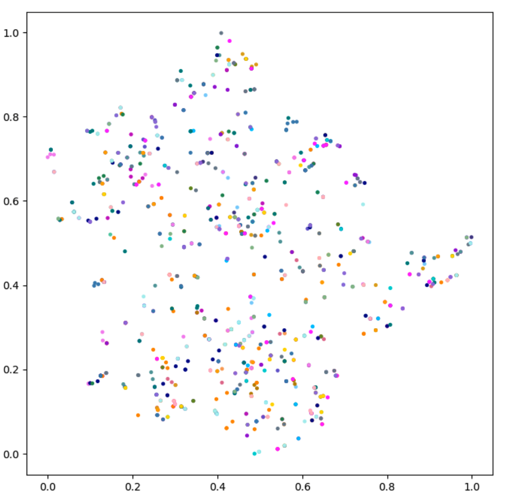

Learning Category-Level Generalizable Object Manipulation Policy
via Generative Adversarial Self-Imitation Learning from Demonstrations
1st prize winner of ManiSkill Challenge 2021(no external annotation track)
ICLR 2022 GPL Workshop
Hao Shen* Weikang Wan* He Wang†
Team: EPIC Lab, Peking University
Abstract
Generalizable object manipulation skills are critical for intelligent and multi-functional robots to work in real-world complex scenes. Despite the recent progress in reinforcement learning, it is still very challenging to learn a generalizable manipulation policy that can handle a category of geometrically diverse articulated objects. In this work, we tackle this category-level object manipulation policy learning problem via imitation learning in a task-agnostic manner, where we assume no handcrafted dense rewards but only a terminal reward. Given this novel and challenging generalizable policy learning problem, we identify several key issues that can fail the previous imitation learning algorithms and hinder the generalization to unseen instances. We then propose several general but critical techniques, including generative adversarial self-imitation learning from demonstrations, progressive growing of discriminator, and instance-balancing for expert buffer, that accurately pinpoints and tackles these issues and can benefit category-level manipulation policy learning regardless of the tasks. Our experiments on ManiSkill benchmarks demonstrate a remarkable improvement on all tasks and our ablation studies further validate the contribution of each proposed technique.
Method Overview
Figure 1: Pipeline Overview. On top of Generative Adversarial Imitation Learning, we introduce Category-Level Instance-Balancing (CLIB) Expert Buffer, which both includes expert demonstrations and successful trajectories and maintain a balance between different instances of objects. Besides, we modified the discriminator's structure to make it progressive as training goes.
Figure 2: The progressive structure of discriminator network. The input contains the point cloud, robot state, and action. The robot state and action are concatenated to a vector in the figure. The output of the network is a scalar ranging from 0 to 1. During training, the latter part of the network progressively grows from max pooling to attention pooling.
Results
Main results and comparison
Table 1: Main Results on the four tasks of ManiSkill Challenge Benchmark. We evaluated our methods on four tasks via 100 trials with three different random seeds. In Table 1, with Progressive Growing of Discriminator, Self-Imitation Learning from Demonstrations and CLIB Expert Buffer, our method (Method V) outperforms GAIL (Method I) by 13% and 18% averaged across four tasks on training and validation sets
Expert reward decay
Figure 3: The expert reward curve during training. The expert reward comes from the discrim- inator. When the expert reward is relatively small, it indicates that the discriminator can easily distinguish between the expert data and the data generated by the policy. Notice that our method (curve V) always achieve the highest value.
Category-Level generalizability of policies
Figure 4: A t-SNE visual comparison of the feature extracted by the trained discriminator from the initial data in the expert buffer and the data in the expert buffer at 2×106 steps for MoveBucket task using our SILFD method. Left: initial data in the expert buffer. Right: data in the expert buffer at 2×106 steps which are mainly generated by our own policy during training. Each color represents the data of an instance.
Ablation studies
Table 2: Comparison of whether to progressively grow the generator By comparing the method of progressively growing both the generator and the discriminator with the method of only growing the discriminator, we find that with the growing generator, the method will decrease by 17% and 15% averaged across four tasks on training and validation sets.
Additional experiments with dense reward
Table 3: Evaluation of our methods with additional handcrafted dense reward provided by ManiSkill. We find that our methods with additional dense reward, which ranks the first place on the "no external annotation“ track of ManiSkill Challenge 2021, can outperform the GAIL+SAC baseline by 7% averaged across four tasks on both training and validation sets.
Bibtex
@article{shen2022learning,
title={Learning Category-Level Generalizable Object Manipulation Policy via Generative Adversarial Self-Imitation Learning from Demonstrations},
author={Shen, Hao and Wan, Weikang and Wang, He},
journal={arXiv preprint arXiv:2203.02107},
year={2022}
}Contact
If you have any questions, please feel free to contact Hao Shen at shenhaosim_at_pku.edu.cn, Weikang Wan at wwk_at_pku.edu.cn and He Wang at hewang_at_pku.edu.cn